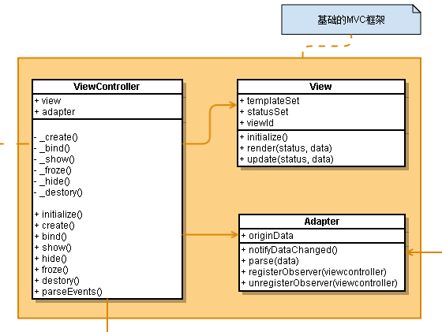
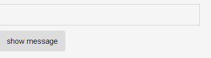
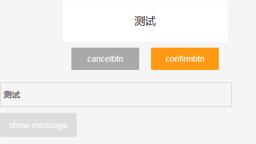
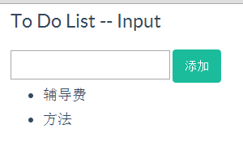
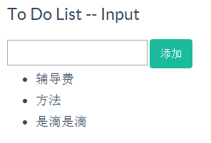
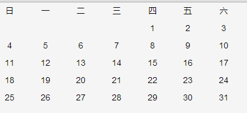
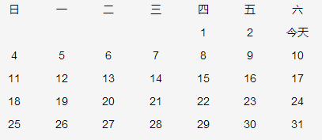

前言
我们上次写了一个简单的日历插件，但是只是一个半成品，而且做完后发现一些问题，于是我们今天尝试来解决这些问题
PS：距离上次貌似很久了
上次，我们大概遇到哪些问题呢：
① 既然想做一套UI库，那么就应该考虑其它UI库的接入问题
这个意思就是，我们的系统中所有UI插件应该有一些统一行为，我们如果希望统一为所有的插件加一点什么东西，需要有位置可加
这个意味着，可能我们所有的插件需要继承至一个抽象的UI类，并且该类提供了通用的几个事件点
② 上次做的日历插件虽然说是简单，其耦合还是比较严重的（其实也说不上，但是人总有想装B的时候）
这个怎么说呢，就日历而言，我们可以将之分成三个部分
1 日历核心部分，用于生产静态html
2 日历数据部分，用于显示各个特殊信息，比如节日什么的
3 日历事件部分，现在的想法便是可以将事件相关给抽象出来
目的便是html/data/events 分开一点点，这个该怎么做呢？这是我们今天该思考的问题
事情多了就什么都不能解决，所以我们今天暂时便处理以上两个问题即可
MVC的学习
由于我们会依赖于underscore，所以，我们这里有一个underscore的扩展，加一些我们自己需要的东西


1 (function () { 2 3 // @description 全局可能用到的变量 4 var arr = []; 5 var slice = arr.slice; 6 7 var method = method || {}; 8 9 /** 10 * @description inherit方法，js的继承，默认为两个参数 11 * @param {function} supClass 可选，要继承的类 12 * @param {object} subProperty 被创建类的成员 13 * @return {function} 被创建的类 14 */ 15 method.inherit = function () { 16 17 // @description 参数检测，该继承方法，只支持一个参数创建类，或者两个参数继承类 18 if (arguments.length === 0 || arguments.length > 2) throw '参数错误'; 19 20 var parent = null; 21 22 // @description 将参数转换为数组 23 var properties = slice.call(arguments); 24 25 // @description 如果第一个参数为类（function），那么就将之取出 26 if (typeof properties[0] === 'function') 27 parent = properties.shift(); 28 properties = properties[0]; 29 30 // @description 创建新类用于返回 31 function klass() { 32 if (_.isFunction(this.initialize)) 33 this.initialize.apply(this, arguments); 34 } 35 36 klass.superclass = parent; 37 // parent.subclasses = []; 38 39 if (parent) { 40 // @description 中间过渡类，防止parent的构造函数被执行 41 var subclass = function () { }; 42 subclass.prototype = parent.prototype; 43 klass.prototype = new subclass(); 44 // parent.subclasses.push(klass); 45 } 46 47 var ancestor = klass.superclass && klass.superclass.prototype; 48 for (var k in properties) { 49 var value = properties[k]; 50 51 //满足条件就重写 52 if (ancestor && typeof value == 'function') { 53 var argslist = /^\s*function\s*\(([^\(\)]*?)\)\s*?\{/i.exec(value.toString())[1].replace(/\s/i, '').split(','); 54 //只有在第一个参数为$super情况下才需要处理（是否具有重复方法需要用户自己决定） 55 if (argslist[0] === '$super' && ancestor[k]) { 56 value = (function (methodName, fn) { 57 return function () { 58 var scope = this; 59 var args = [function () { 60 return ancestor[methodName].apply(scope, arguments); 61 } ]; 62 return fn.apply(this, args.concat(slice.call(arguments))); 63 }; 64 })(k, value); 65 } 66 } 67 68 //此处对对象进行扩展，当前原型链已经存在该对象，便进行扩展 69 if (_.isObject(klass.prototype[k]) && _.isObject(value) && (typeof klass.prototype[k] != 'function' && typeof value != 'fuction')) { 70 //原型链是共享的，这里不好办 71 var temp = {}; 72 _.extend(temp, klass.prototype[k]); 73 _.extend(temp, value); 74 klass.prototype[k] = temp; 75 } else { 76 klass.prototype[k] = value; 77 } 78 79 } 80 81 if (!klass.prototype.initialize) 82 klass.prototype.initialize = function () { }; 83 84 klass.prototype.constructor = klass; 85 86 return klass; 87 }; 88 89 _.extend(_, method); 90 91 })(window);
对的，以上是我们前面实现的继承，我们将之扩展至underscore上，以后以此实现继承
其次，我们便需要思考如何分离我们的数据/模板/事件了
View/Adapter/ViewController
俗话说，大树底下好乘凉，事实上我一些想法来自于我的老大，我老大又借鉴了原来的ios开发，所以这里形成了一些东西，不知道是否合理，我们拿出来看看
View
首先，无论如何我们的应用都会有一个view的存在，我们认为view只做简单的页面渲染就好，与之有关的数据/事件什么的，我们不予关注
1 // @description 正式的声明Dalmatian框架的命名空间 2 var Dalmatian = Dalmatian || {}; 3 4 // @description 定义默认的template方法来自于underscore 5 Dalmatian.template = _.template; 6 Dalmatian.View = _.inherit({ 7 // @description 构造函数入口 8 initialize: function(options) { 9 this._initialize(); 10 this.handleOptions(options); 11 12 }, 13 14 // @description 设置默认属性 15 _initialize: function() { 16 17 var DEFAULT_CONTAINER_TEMPLATE = '<section class="view" id="<%=viewid%>"><%=html%></section>'; 18 19 // @description view状态机 20 // this.statusSet = {}; 21 22 this.defaultContainerTemplate = DEFAULT_CONTAINER_TEMPLATE; 23 24 // @override 25 // @description template集合，根据status做template的map 26 // @example 27 // { 0: '<ul><%_.each(list, function(item){%><li><%=item.name%></li><%});%></ul>' } 28 // this.templateSet = {}; 29 30 this.viewid = _.uniqueId('dalmatian-view-'); 31 32 }, 33 34 // @description 操作构造函数传入操作 35 handleOptions: function(options) { 36 // @description 从形参中获取key和value绑定在this上 37 if (_.isObject(options)) _.extend(this, options); 38 39 }, 40 41 // @description 通过模板和数据渲染具体的View 42 // @param status {enum} View的状态参数 43 // @param data {object} 匹配View的数据格式的具体数据 44 // @param callback {functiion} 执行完成之后的回调 45 render: function(status, data, callback) { 46 47 var templateSelected = this.templateSet[status]; 48 if (templateSelected) { 49 50 try { 51 // @description 渲染view 52 var templateFn = Dalmatian.template(templateSelected); 53 this.html = templateFn(data); 54 55 // @description 在view外层加入外壳 56 templateFn = Dalmatian.template(this.defaultContainerTemplate); 57 this.html = templateFn({ 58 viewid: this.viewid, 59 html: this.html 60 }); 61 62 this.currentStatus = status; 63 64 _.callmethod(callback, this); 65 66 return true; 67 68 } catch (e) { 69 70 throw e; 71 72 } finally { 73 74 return false; 75 } 76 } 77 }, 78 79 // @override 80 // @description 可以被复写，当status和data分别发生变化时候 81 // @param status {enum} view的状态值 82 // @param data {object} viewmodel的数据 83 update: function(status, data) { 84 85 if (!this.currentStatus || this.currentStatus !== status) { 86 return this.render(status, data); 87 } 88 89 // @override 90 // @description 可复写部分，当数据发生变化但是状态没有发生变化时，页面仅仅变化的可以是局部显示 91 // 可以通过获取this.html进行修改 92 _.callmethod(this.onUpdate, this); 93 } 94 });
从代码上看，我们需要注意几个事情：
① View会生成静态HTML
② View会根据当前状态、当前数据生成静态HTML
所以，我们的View事实上只会生成静态HTML，不同的是他会根据不同的状态生成不同的HTML，比如初始状态和加载结束状态
有了View便缺不了数据，也就是所谓的Model，我们这里给他取一个名字，Adapter
Adapter
1 Dalmatian.Adapter = _.inherit({ 2 3 // @description 构造函数入口 4 initialize: function(options) { 5 this._initialize(); 6 this.handleOptions(options); 7 8 }, 9 10 // @description 设置默认属性 11 _initialize: function() { 12 this.observers = []; 13 this.viewmodel = {}; 14 this.datamodel = {}; 15 }, 16 17 // @description 操作构造函数传入操作 18 handleOptions: function(options) { 19 // @description 从形参中获取key和value绑定在this上 20 if (_.isObject(options)) _.extend(this, options); 21 }, 22 23 // @description 设置 24 format: function(origindata){ 25 this.datamodel = origindata; 26 this.viewmodel = this.parse(origindata); 27 return this.viewmodel; 28 }, 29 30 // @override 31 // @description parse方法用来将datamodel转化为viewmodel，必须被重写 32 parse: function(origindata) { 33 throw Error('方法必须被重写'); 34 }, 35 36 registerObserver: function(viewcontroller) { 37 // @description 检查队列中如果没有viewcontroller，从队列尾部推入 38 if (!_.contains(this.observers, viewcontroller)) { 39 this.observers.push(viewcontroller); 40 } 41 }, 42 43 unregisterObserver: function(viewcontroller) { 44 // @description 从observers的队列中剔除viewcontroller 45 this.observers = _.without(this.observers, viewcontroller); 46 }, 47 48 notifyDataChanged: function() { 49 // @description 通知所有注册的观察者被观察者的数据发生变化 50 var data = this.format(this.datamodel); 51 _.each(this.observers, function(viewcontroller) { 52 if (_.isObject(viewcontroller)) 53 _.callmethod(viewcontroller.update, viewcontroller, [data]); 54 }); 55 } 56 });
Adapter由以下几个关键组成：
① View观察者
② 数据模型，便是原始的数据
③ viewModel，便是view实际需要的数据
并且每一次数据的改变会通知观察的view，触发其update，所以Adapter的组成也比较干脆，并不复杂
但是，我们的view仍然没有事件，而且Adapter也没有与view联系起来，这个时候我们缺少一个要件，他的名字是Controller
ViewController
控制器是链接模型与视图的桥梁，我们这里也不例外，核心动作皆会在控制器处完成
1 Dalmatian.ViewController = _.inherit({ 2 3 // @description 构造函数入口 4 initialize: function (options) { 5 this.handleOptions(options); 6 this.create(); 7 }, 8 9 // @description 操作构造函数传入操作 10 handleOptions: function (options) { 11 this._verify(options); 12 13 // @description 从形参中获取key和value绑定在this上 14 if (_.isObject(options)) _.extend(this, options); 15 }, 16 17 // @description 验证参数 18 _verify: function (options) { 19 if (!_.property('view')(options)) throw Error('view必须在实例化的时候传入ViewController'); 20 }, 21 22 // @description 当数据发生变化时调用onViewUpdate，如果onViewUpdate方法不存在的话，直接调用render方法重绘 23 update: function (data) { 24 25 _.callmethod(this.hide, this); 26 27 if (!_.callmethod(this.onViewUpdate, this, [data])) { 28 this.render(); 29 } 30 31 _.callmethod(this.show, this); 32 }, 33 34 /** 35 * @description 传入事件对象，解析之，解析event，返回对象{events: [{target: '#btn', event:'click', callback: handler}]} 36 * @param events {obj} 事件对象，默认传入唯一id 37 * @param namespace 事件命名空间 38 * @return {obj} 39 */ 40 parseEvents: function (events) { 41 42 //用于返回的事件对象 43 var eventArr = []; 44 //注意，此处做简单的字符串数据解析即可，不做实际业务 45 for (var key in events) { 46 var method = events[key]; 47 if (!_.isFunction(method)) method = this[events[key]]; 48 if (!method) continue; 49 50 var match = key.match(delegateEventSplitter); 51 var eventName = match[1], 52 selector = match[2]; 53 method = _.bind(method, this); 54 eventName += '.delegateEvents' + this.view.viewid; 55 eventArr.push({ 56 target: selector, 57 event: eventName, 58 callback: method 59 }); 60 } 61 62 return eventArr; 63 }, 64 65 /** 66 * @override 67 * 68 */ 69 render: function() { 70 // @notation 这个方法需要被复写 71 // var data = this.adapter.format(this.origindata); 72 // this.view.render(this.viewstatus, data); 73 }, 74 75 _create: function () { 76 this.render(); 77 }, 78 79 create: function () { 80 81 var $element = selectDom(this.view.viewid); 82 if (domImplement($element, 'get', false, [0])) { 83 return _.callmethod(this.recreate, this); 84 } 85 86 // @notation 在create方法调用前后设置onViewBeforeCreate和onViewAfterCreate两个回调 87 _.wrapmethod(this._create, 'onViewBeforeCreate', 'onViewAfterCreate', this); 88 89 }, 90 91 /** 92 * @description 如果进入create判断是否需要update一下页面，sync view和viewcontroller的数据 93 */ 94 _recreate: function () { 95 this.update(); 96 }, 97 98 recreate: function () { 99 _.wrapmethod(this._recreate, 'onViewBeforeRecreate', 'onViewAfterRecreate', this); 100 }, 101 102 _bind: function () { 103 this.viewcontent = createDom(this.view.html); 104 105 var eventsList = this.parseEvents(this.events); 106 107 var scope = this; 108 _.each(eventsList, function (item) { 109 110 if (item.target === '') { 111 eventmethod(scope.viewcontent, 'on', item.event, item.callback, scope); 112 } else { 113 eventmethod(scope.viewcontent, 'on', item.event, item.callback, scope, item.target); 114 } 115 116 }); 117 }, 118 119 bind: function () { 120 _.wrapmethod(this._bind, 'onViewBeforeBind', 'onViewAfterBind', this); 121 }, 122 123 _show: function () { 124 var $element = selectDom('#' + this.view.viewid); 125 126 // @notation 需要剔除码？ 127 // if ((!$element || $element.length === 0) && this.viewcontent) { 128 var $container = selectDom(this.container); 129 domImplement($container, 'html', false, [this.viewcontent]); 130 // } 131 132 domImplement($element, 'show'); 133 }, 134 135 show: function () { 136 this.bind(); 137 138 _.wrapmethod(this._show, 'onViewBeforeShow', 'onViewAfterShow', this); 139 }, 140 141 _hide: function () { 142 var $element = selectDom('#' + this.view.viewid); 143 domImplement($element, 'hide'); 144 }, 145 146 hide: function () { 147 _.wrapmethod(this._hide, 'onViewBeforeHide', 'onViewAfterHide', this); 148 149 this.forze(); 150 }, 151 152 _forze: function () { 153 var $element = selectDom('#' + this.view.viewid); 154 domImplement($element, 'off'); 155 }, 156 157 forze: function () { 158 _.wrapmethod(this._forze, 'onViewBeforeForzen', 'onViewAfterForzen', this); 159 }, 160 161 _destory: function () { 162 var $element = selectDom('#' + this.view.viewid).remove(); 163 domImplement($element, 'remove'); 164 }, 165 166 destory: function () { 167 _.wrapmethod(this._destory, 'onViewBeforeDestory', 'onViewAfterDestory', this); 168 } 169 });
control这里便有所不同，会稍微复杂一点点
① 首先，他会验证自己是否含有view参数，我们这里要求一个控制器必须对应一个view，如果没有指定的话便认为错误
if (!_.property('view')(options)) throw Error('view必须在实例化的时候传入ViewController');
② 然后主要有几个关键事件点，第一个是create
PS：这里会区分是否二次创建该View，这个判断事实上不应该通过dom是否存在来判断，这里后期优化
create调用便会调用view的render方法，然后便会构建相关的dom结构，并且append到container中
③ 第二个关键事件点为show，调用时，dom会真正的显示，并且绑定事件
PS：事件这块借鉴的Backbone的机制，全部绑定值根元素，具体优化后面再说吧
④ 除此之外还有hide、forze（解除事件句柄，释放资源）、destroy等不详说了

说了这么多都是扯淡，我们下面以两个简单的例子做一次说明
实例说明
MVC学习完整代码
有不对的地方请提出
1 "use strict"; 2 3 // @notation 本框架默认是以来于zepto。这里构建了基础的方法层,当用户使用其他框架时，可能需要复写这几个基础方法 4 5 // @description 解析event参数的正则 6 var delegateEventSplitter = /^(\S+)\s*(.*)$/; 7 // Regular expression used to split event strings. 8 var eventSplitter = /\s+/; 9 10 // ---------------------------------------------------- 11 // @notation 从backbone中借鉴而来，用来多事件绑定的events 12 13 // Implement fancy features of the Events API such as multiple event 14 // names `"change blur"` and jQuery-style event maps `{change: action}` 15 // in terms of the existing API. 16 var eventoperator = function(obj, action, name, rest) { 17 if (!name) return true; 18 19 // Handle event maps. 20 if (typeof name === 'object') { 21 for (var key in name) { 22 obj[action].apply(obj, [key, name[key]].concat(rest)); 23 } 24 return false; 25 } 26 27 // Handle space separated event names. 28 if (eventSplitter.test(name)) { 29 var names = name.split(eventSplitter); 30 for (var i = 0, length = names.length; i < length; i++) { 31 obj[action].apply(obj, [names[i]].concat(rest)); 32 } 33 return false; 34 } 35 36 return true; 37 }; 38 // ---------------------------------------------------- 39 40 // @notation 默认使用zepto的事件委托机制 41 function eventmethod(obj, action, name, callback, context, subobj) { 42 // _.bind(callback, context || this); 43 44 var delegate = function(target, eventName, eventCallback, subtarget) { 45 if (subtarget) { 46 target.on(eventName, subtarget, eventCallback); 47 }else{ 48 target.on(eventName, eventCallback); 49 } 50 }; 51 52 var undelegate = function(target, eventName, eventCallback, subtarget) { 53 if (subtarget) { 54 target.off(eventName, subtarget, eventCallback); 55 }else{ 56 target.off(eventName, eventCallback); 57 } 58 }; 59 60 var trigger = function(target, eventName, subtarget) { 61 if (subtarget) { 62 target.find(subtarget).trigger(eventName); 63 }else{ 64 target.trigger(eventName); 65 } 66 }; 67 68 var map = { 69 'on': delegate, 70 'bind': delegate, 71 'off': undelegate, 72 'unbind': undelegate, 73 'trigger': trigger 74 }; 75 76 if (_.isFunction(map[action])) { 77 map[action](obj, name, callback, subobj); 78 } 79 80 } 81 82 // @description 选择器 83 function selectDom(selector) { 84 return $(selector); 85 } 86 87 function domImplement($element, action, context, param) { 88 if (_.isFunction($element[action])) 89 $element[action].apply(context || $element, param); 90 } 91 92 function createDom (html) { 93 return $(html); 94 } 95 96 // --------------------------------------------------- // 97 // ------------------华丽的分割线--------------------- // 98 99 // @description 正式的声明Dalmatian框架的命名空间 100 var Dalmatian = Dalmatian || {}; 101 102 // @description 定义默认的template方法来自于underscore 103 Dalmatian.template = _.template; 104 Dalmatian.View = _.inherit({ 105 // @description 构造函数入口 106 initialize: function(options) { 107 this._initialize(); 108 this.handleOptions(options); 109 110 }, 111 112 // @description 设置默认属性 113 _initialize: function() { 114 115 var DEFAULT_CONTAINER_TEMPLATE = '<section class="view" id="<%=viewid%>"><%=html%></section>'; 116 117 // @description view状态机 118 // this.statusSet = {}; 119 120 this.defaultContainerTemplate = DEFAULT_CONTAINER_TEMPLATE; 121 122 // @override 123 // @description template集合，根据status做template的map 124 // @example 125 // { 0: '<ul><%_.each(list, function(item){%><li><%=item.name%></li><%});%></ul>' } 126 // this.templateSet = {}; 127 128 this.viewid = _.uniqueId('dalmatian-view-'); 129 130 }, 131 132 // @description 操作构造函数传入操作 133 handleOptions: function(options) { 134 // @description 从形参中获取key和value绑定在this上 135 if (_.isObject(options)) _.extend(this, options); 136 137 }, 138 139 // @description 通过模板和数据渲染具体的View 140 // @param status {enum} View的状态参数 141 // @param data {object} 匹配View的数据格式的具体数据 142 // @param callback {functiion} 执行完成之后的回调 143 render: function(status, data, callback) { 144 145 var templateSelected = this.templateSet[status]; 146 if (templateSelected) { 147 148 try { 149 // @description 渲染view 150 var templateFn = Dalmatian.template(templateSelected); 151 this.html = templateFn(data); 152 153 // @description 在view外层加入外壳 154 templateFn = Dalmatian.template(this.defaultContainerTemplate); 155 this.html = templateFn({ 156 viewid: this.viewid, 157 html: this.html 158 }); 159 160 this.currentStatus = status; 161 162 _.callmethod(callback, this); 163 164 return true; 165 166 } catch (e) { 167 168 throw e; 169 170 } finally { 171 172 return false; 173 } 174 } 175 }, 176 177 // @override 178 // @description 可以被复写，当status和data分别发生变化时候 179 // @param status {enum} view的状态值 180 // @param data {object} viewmodel的数据 181 update: function(status, data) { 182 183 if (!this.currentStatus || this.currentStatus !== status) { 184 return this.render(status, data); 185 } 186 187 // @override 188 // @description 可复写部分，当数据发生变化但是状态没有发生变化时，页面仅仅变化的可以是局部显示 189 // 可以通过获取this.html进行修改 190 _.callmethod(this.onUpdate, this); 191 } 192 }); 193 194 Dalmatian.Adapter = _.inherit({ 195 196 // @description 构造函数入口 197 initialize: function(options) { 198 this._initialize(); 199 this.handleOptions(options); 200 201 }, 202 203 // @description 设置默认属性 204 _initialize: function() { 205 this.observers = []; 206 this.viewmodel = {}; 207 this.datamodel = {}; 208 }, 209 210 // @description 操作构造函数传入操作 211 handleOptions: function(options) { 212 // @description 从形参中获取key和value绑定在this上 213 if (_.isObject(options)) _.extend(this, options); 214 }, 215 216 // @description 设置 217 format: function(origindata){ 218 this.datamodel = origindata; 219 this.viewmodel = this.parse(origindata); 220 return this.viewmodel; 221 }, 222 223 // @override 224 // @description parse方法用来将datamodel转化为viewmodel，必须被重写 225 parse: function(origindata) { 226 throw Error('方法必须被重写'); 227 }, 228 229 registerObserver: function(viewcontroller) { 230 // @description 检查队列中如果没有viewcontroller，从队列尾部推入 231 if (!_.contains(this.observers, viewcontroller)) { 232 this.observers.push(viewcontroller); 233 } 234 }, 235 236 unregisterObserver: function(viewcontroller) { 237 // @description 从observers的队列中剔除viewcontroller 238 this.observers = _.without(this.observers, viewcontroller); 239 }, 240 241 notifyDataChanged: function() { 242 // @description 通知所有注册的观察者被观察者的数据发生变化 243 var data = this.format(this.datamodel); 244 _.each(this.observers, function(viewcontroller) { 245 if (_.isObject(viewcontroller)) 246 _.callmethod(viewcontroller.update, viewcontroller, [data]); 247 }); 248 } 249 }); 250 251 Dalmatian.ViewController = _.inherit({ 252 253 // @description 构造函数入口 254 initialize: function (options) { 255 this.handleOptions(options); 256 this.create(); 257 }, 258 259 // @description 操作构造函数传入操作 260 handleOptions: function (options) { 261 this._verify(options); 262 263 // @description 从形参中获取key和value绑定在this上 264 if (_.isObject(options)) _.extend(this, options); 265 }, 266 267 // @description 验证参数 268 _verify: function (options) { 269 if (!_.property('view')(options)) throw Error('view必须在实例化的时候传入ViewController'); 270 }, 271 272 // @description 当数据发生变化时调用onViewUpdate，如果onViewUpdate方法不存在的话，直接调用render方法重绘 273 update: function (data) { 274 275 _.callmethod(this.hide, this); 276 277 if (!_.callmethod(this.onViewUpdate, this, [data])) { 278 this.render(); 279 } 280 281 _.callmethod(this.show, this); 282 }, 283 284 /** 285 * @description 传入事件对象，解析之，解析event，返回对象{events: [{target: '#btn', event:'click', callback: handler}]} 286 * @param events {obj} 事件对象，默认传入唯一id 287 * @param namespace 事件命名空间 288 * @return {obj} 289 */ 290 parseEvents: function (events) { 291 292 //用于返回的事件对象 293 var eventArr = []; 294 //注意，此处做简单的字符串数据解析即可，不做实际业务 295 for (var key in events) { 296 var method = events[key]; 297 if (!_.isFunction(method)) method = this[events[key]]; 298 if (!method) continue; 299 300 var match = key.match(delegateEventSplitter); 301 var eventName = match[1], 302 selector = match[2]; 303 method = _.bind(method, this); 304 eventName += '.delegateEvents' + this.view.viewid; 305 eventArr.push({ 306 target: selector, 307 event: eventName, 308 callback: method 309 }); 310 } 311 312 return eventArr; 313 }, 314 315 /** 316 * @override 317 * 318 */ 319 render: function() { 320 // @notation 这个方法需要被复写 321 // var data = this.adapter.format(this.origindata); 322 // this.view.render(this.viewstatus, data); 323 }, 324 325 _create: function () { 326 this.render(); 327 }, 328 329 create: function () { 330 331 var $element = selectDom(this.view.viewid); 332 if (domImplement($element, 'get', false, [0])) { 333 return _.callmethod(this.recreate, this); 334 } 335 336 // @notation 在create方法调用前后设置onViewBeforeCreate和onViewAfterCreate两个回调 337 _.wrapmethod(this._create, 'onViewBeforeCreate', 'onViewAfterCreate', this); 338 339 }, 340 341 /** 342 * @description 如果进入create判断是否需要update一下页面，sync view和viewcontroller的数据 343 */ 344 _recreate: function () { 345 this.update(); 346 }, 347 348 recreate: function () { 349 _.wrapmethod(this._recreate, 'onViewBeforeRecreate', 'onViewAfterRecreate', this); 350 }, 351 352 _bind: function () { 353 this.viewcontent = createDom(this.view.html); 354 355 var eventsList = this.parseEvents(this.events); 356 357 var scope = this; 358 _.each(eventsList, function (item) { 359 360 if (item.target === '') { 361 eventmethod(scope.viewcontent, 'on', item.event, item.callback, scope); 362 } else { 363 eventmethod(scope.viewcontent, 'on', item.event, item.callback, scope, item.target); 364 } 365 366 }); 367 }, 368 369 bind: function () { 370 _.wrapmethod(this._bind, 'onViewBeforeBind', 'onViewAfterBind', this); 371 }, 372 373 _show: function () { 374 var $element = selectDom('#' + this.view.viewid); 375 376 // @notation 需要剔除码？ 377 // if ((!$element || $element.length === 0) && this.viewcontent) { 378 var $container = selectDom(this.container); 379 domImplement($container, 'html', false, [this.viewcontent]); 380 // } 381 382 domImplement($element, 'show'); 383 }, 384 385 show: function () { 386 this.bind(); 387 388 _.wrapmethod(this._show, 'onViewBeforeShow', 'onViewAfterShow', this); 389 }, 390 391 _hide: function () { 392 var $element = selectDom('#' + this.view.viewid); 393 domImplement($element, 'hide'); 394 }, 395 396 hide: function () { 397 _.wrapmethod(this._hide, 'onViewBeforeHide', 'onViewAfterHide', this); 398 399 this.forze(); 400 }, 401 402 _forze: function () { 403 var $element = selectDom('#' + this.view.viewid); 404 domImplement($element, 'off'); 405 }, 406 407 forze: function () { 408 _.wrapmethod(this._forze, 'onViewBeforeForzen', 'onViewAfterForzen', this); 409 }, 410 411 _destory: function () { 412 var $element = selectDom('#' + this.view.viewid).remove(); 413 domImplement($element, 'remove'); 414 }, 415 416 destory: function () { 417 _.wrapmethod(this._destory, 'onViewBeforeDestory', 'onViewAfterDestory', this); 418 } 419 });
underscore扩展
1 (function () { 2 3 // @description 全局可能用到的变量 4 var arr = []; 5 var slice = arr.slice; 6 7 var method = method || {}; 8 9 10 /** 11 * @description inherit方法，js的继承，默认为两个参数 12 * @param {function} supClass 可选，要继承的类 13 * @param {object} subProperty 被创建类的成员 14 * @return {function} 被创建的类 15 */ 16 method.inherit = function () { 17 18 // @description 参数检测，该继承方法，只支持一个参数创建类，或者两个参数继承类 19 if (arguments.length === 0 || arguments.length > 2) throw '参数错误'; 20 21 var parent = null; 22 23 // @description 将参数转换为数组 24 var properties = slice.call(arguments); 25 26 // @description 如果第一个参数为类（function），那么就将之取出 27 if (typeof properties[0] === 'function') 28 parent = properties.shift(); 29 properties = properties[0]; 30 31 // @description 创建新类用于返回 32 function klass() { 33 if (_.isFunction(this.initialize)) 34 this.initialize.apply(this, arguments); 35 } 36 37 klass.superclass = parent; 38 // parent.subclasses = []; 39 40 if (parent) { 41 // @description 中间过渡类，防止parent的构造函数被执行 42 var subclass = function () { }; 43 subclass.prototype = parent.prototype; 44 klass.prototype = new subclass(); 45 // parent.subclasses.push(klass); 46 } 47 48 var ancestor = klass.superclass && klass.superclass.prototype; 49 for (var k in properties) { 50 var value = properties[k]; 51 52 //满足条件就重写 53 if (ancestor && typeof value == 'function') { 54 var argslist = /^\s*function\s*\(([^\(\)]*?)\)\s*?\{/i.exec(value.toString())[1].replace(/\s/i, '').split(','); 55 //只有在第一个参数为$super情况下才需要处理（是否具有重复方法需要用户自己决定） 56 if (argslist[0] === '$super' && ancestor[k]) { 57 value = (function (methodName, fn) { 58 return function () { 59 var scope = this; 60 var args = [function () { 61 return ancestor[methodName].apply(scope, arguments); 62 } ]; 63 return fn.apply(this, args.concat(slice.call(arguments))); 64 }; 65 })(k, value); 66 } 67 } 68 69 //此处对对象进行扩展，当前原型链已经存在该对象，便进行扩展 70 if (_.isObject(klass.prototype[k]) && _.isObject(value) && (typeof klass.prototype[k] != 'function' && typeof value != 'fuction')) { 71 //原型链是共享的，这里不好办 72 var temp = {}; 73 _.extend(temp, klass.prototype[k]); 74 _.extend(temp, value); 75 klass.prototype[k] = temp; 76 } else { 77 klass.prototype[k] = value; 78 } 79 80 } 81 82 if (!klass.prototype.initialize) 83 klass.prototype.initialize = function () { }; 84 85 klass.prototype.constructor = klass; 86 87 return klass; 88 }; 89 90 // @description 返回需要的函数 91 method.getNeedFn = function (key, scope) { 92 scope = scope || window; 93 if (_.isFunction(key)) return key; 94 if (_.isFunction(scope[key])) return scope[key]; 95 return function () { }; 96 }; 97 98 method.callmethod = function (method, scope, params) { 99 scope = scope || this; 100 if (_.isFunction(method)) { 101 method.apply(scope, params); 102 return true; 103 } 104 105 return false; 106 }; 107 108 /** 109 * @description 在fn方法的前后通过键值设置两个传入的回调 110 * @param fn {function} 调用的方法 111 * @param beforeFnKey {string} 从context对象中获得的函数指针的键值，该函数在fn前执行 112 * @param afterFnKey {string} 从context对象中获得的函数指针的键值，该函数在fn后执行 113 * @param context {object} 执行环节的上下文 114 * @return {function} 115 */ 116 method.wrapmethod = method.insert = function (fn, beforeFnKey, afterFnKey, context) { 117 118 var scope = context || this; 119 var action = _.wrap(fn, function (func) { 120 121 _.callmethod(_.getNeedFn(beforeFnKey, scope), scope); 122 123 func.call(scope); 124 125 _.callmethod(_.getNeedFn(afterFnKey, scope), scope); 126 }); 127 128 return _.callmethod(action, scope); 129 } 130 131 132 _.extend(_, method); 133 134 })(window);
简单alert框
首先我们来做一个简单的alert框，这个框在我们点击界面时候弹出一个提示，提示文字由文本框给出
第一步便是简单的HTML了
1 <!doctype html> 2 <html lang="en"> 3 <head> 4 <meta charset="UTF-8"> 5 <title>ToDoList</title> 6 <meta name="viewport" content="width=device-width, initial-scale=1.0"> 7 <link rel="stylesheet" type="text/css" href="http://designmodo.github.io/Flat-UI/bootstrap/css/bootstrap.css"> 8 <link rel="stylesheet" type="text/css" href="http://designmodo.github.io/Flat-UI/css/flat-ui.css"> 9 <link href="../style/main.css" rel="stylesheet" type="text/css" /> 10 <style type="text/css"> 11 .cui-alert { width: auto; position: static; } 12 .txt { border: #cfcfcf 1px solid; margin: 10px 0; width: 80%; } 13 </style> 14 </head> 15 <body> 16 <article class="container"> 17 </article> 18 <input type="text" id="addmsg" class="txt"> 19 <button id="addbtn" class="btn"> 20 show message</button> 21 <script type="text/underscore-template" id="template-alert"> 22 <div class=" cui-alert" > 23 <div class="cui-pop-box"> 24 <div class="cui-bd"> 25 <p class="cui-error-tips"><%=content%></p> 26 <div class="cui-roller-btns"> 27 <div class="cui-flexbd cui-btns-cancel"><%=cancel%></div> 28 <div class="cui-flexbd cui-btns-sure"><%=confirm%></div> 29 </div> 30 </div> 31 </div> 32 </div> 33 </script> 34 <script type="text/javascript" src="../../vendor/underscore-min.js"></script> 35 <script type="text/javascript" src="../../vendor/zepto.min.js"></script> 36 <script src="../../src/underscore.extend.js" type="text/javascript"></script> 37 <script src="../../src/mvc.js" type="text/javascript"></script> 38 <script type="text/javascript" src="ui.alert.js"></script> 39 </body> 40 </html>
因为该插件本身比较简单，不存在状态值便会，所以view定义如此即可
1 var htmltemplate = $('#template-alert').html(); 2 3 var AlertView = _.inherit(Dalmatian.View, { 4 templateSet: { 5 0: htmltemplate 6 }, 7 8 statusSet: { 9 STATUS_INIT: 0 10 } 11 });
Adapter也比较简单
var Adapter = _.inherit(Dalmatian.Adapter, { parse: function (data) { return data; } });
现在重点便是controller了
1 var Controller = _.inherit(Dalmatian.ViewController, { 2 render: function () { 3 var data = this.adapter.viewmodel; 4 this.view.render(this.viewstatus, data); 5 }, 6 7 set: function (options) { 8 this.adapter.datamodel.content = options.content; 9 this.adapter.notifyDataChanged(); 10 }, 11 12 events: { 13 "click .cui-btns-cancel": "cancelaction" 14 }, 15 16 cancelaction: function () { 17 this.onCancelBtnClick(); 18 }, 19 20 attr: function (key, value) { 21 this[key] = value; 22 } 23 });
这里有个不一样的地方便是，这里有一个Adapter的set方法，set之后会改变其状态，这里会发生一次通知view更新的动作
最后我们将之串联起来
var view = new AlertView() var adapter = new Adapter(); var controller = new Controller({ view: view, adapter: adapter, container: '.container', onViewBeforeCreate: function () { var origindata = { content: 'fuck', confirm: 'confirmbtn', cancel: 'cancelbtn' } this.adapter.format(origindata); this.adapter.registerObserver(this); this.viewstatus = this.view.statusSet.STATUS_INIT; }, onCancelBtnClick: function () { alert('cancel 2') } });
然后我们写一段业务代码
1 $('#addbtn').on('click', function (e) { 2 var content = $('#addmsg').val(); 3 // adapter.datamodel.content = content; 4 // adapter.notifyDataChanged(); 5 controller.set({ content: content }); 6 controller.show(); 7 });
基本完成我们的操作了


事实上，我对这段代码并不是十分满意，于是，我们这里做一次简单重构：
1 var htmltemplate = $('#template-alert').html(); 2 3 var AlertView = _.inherit(Dalmatian.View, { 4 templateSet: { 5 0: htmltemplate 6 }, 7 8 statusSet: { 9 STATUS_INIT: 0 10 } 11 }); 12 13 14 var Adapter = _.inherit(Dalmatian.Adapter, { 15 parse: function (data) { 16 return data; 17 } 18 }); 19 20 var Controller = _.inherit(Dalmatian.ViewController, { 21 //设置默认信息 22 _initialize: function () { 23 this.origindata = { 24 content: '', 25 confirm: '确定', 26 cancel: '取消' 27 } 28 }, 29 30 initialize: function ($super, opts) { 31 this._initialize(); 32 $super(opts); 33 this._init(); 34 }, 35 36 //基础数据处理 37 _init: function () { 38 this.adapter.format(this.origindata); 39 this.adapter.registerObserver(this); 40 this.viewstatus = this.view.statusSet.STATUS_INIT; 41 }, 42 43 render: function () { 44 var data = this.adapter.viewmodel; 45 this.view.render(this.viewstatus, data); 46 }, 47 48 set: function (options) { 49 _.extend(this.adapter.datamodel, options); 50 // this.adapter.datamodel.content = options.content; 51 this.adapter.notifyDataChanged(); 52 }, 53 54 events: { 55 "click .cui-btns-cancel": "cancelaction" 56 }, 57 58 cancelaction: function () { 59 this.onCancelBtnClick(); 60 } 61 }); 62 63 var view = new AlertView() 64 var adapter = new Adapter(); 65 66 var controller = new Controller({ 67 view: view, 68 adapter: adapter, 69 container: '.container', 70 onCancelBtnClick: function () { 71 alert('cancel 2') 72 } 73 }); 74 75 $('#addbtn').on('click', function (e) { 76 var content = $('#addmsg').val(); 77 // adapter.datamodel.content = content; 78 // adapter.notifyDataChanged(); 79 controller.set({ content: content, confirm: '确定1' }); 80 controller.show(); 81 });
这个例子结束后，我们来写另一个例子
todolist
Backbone有一个todoList，我们这里也来写一个阉割版的，因为若是今天全部时间来写这个，后面就没法继续了
这个例子事实上也比较简单了，首先看我们的HTML结构
1 <!doctype html> 2 <html lang="en"> 3 <head> 4 <meta charset="UTF-8"> 5 <title>ToDoList</title> 6 <meta name="viewport" content="width=device-width, initial-scale=1.0"> 7 <link rel="stylesheet" type="text/css" href="http://designmodo.github.io/Flat-UI/bootstrap/css/bootstrap.css"> 8 <link rel="stylesheet" type="text/css" href="http://designmodo.github.io/Flat-UI/css/flat-ui.css"> 9 </head> 10 <body> 11 <article class="container"> 12 </article> 13 <script type="text/underscore-template" id="template-todolist"> 14 <section class="row"> 15 <div class="col-xs-9"> 16 <form action=""> 17 <legend>To Do List -- Input</legend> 18 <input type="text" placeholer="ToDoList" id="todoinput"> 19 <button class="btn btn-primary" data-action="add">添加</button> 20 </form> 21 <ul id="todolist"> 22 <%_.each(list, function(item){%> 23 <li><%=item.content %></li> 24 <%})%> 25 </ul> 26 </div> 27 </section> 28 </script> 29 <script type="text/javascript" src="../../vendor/underscore-min.js"></script> 30 <script type="text/javascript" src="../../vendor/zepto.min.js"></script> 31 <script src="../../src/underscore.extend.js" type="text/javascript"></script> 32 <script src="../../src/mvc.js" type="text/javascript"></script> 33 <script type="text/javascript" src="demo.js"></script> 34 </body> 35 </html>
其次是我们的js
1 var htmltemplate = $('#template-todolist').html(); 2 3 var view = new Dalmatian.View({ 4 templateSet: { 5 0:htmltemplate 6 }, 7 statusSet: { 8 STATUS_INIT: 0 9 } 10 }); 11 12 var Adapter = _.inherit(Dalmatian.Adapter, { 13 parse: function (origindata) { 14 return origindata; 15 } 16 }); 17 18 var Controller = _.inherit(Dalmatian.ViewController, { 19 render: function() { 20 console.log('controller-render') 21 var data = this.adapter.viewmodel; 22 this.view.render(this.viewstatus, data); 23 }, 24 25 events: { 26 'click button': 'action' 27 }, 28 29 action: function(e) { 30 e.preventDefault(); 31 32 var target = $(e.currentTarget).attr('data-action'); 33 var strategy = { 34 'add': function(e) { 35 var value = $('#todoinput').val(); 36 this.adapter.datamodel.list.push({ content: value }); 37 // this.adapter.parse(this.adapter.datamodel); 38 this.adapter.notifyDataChanged(); 39 } 40 } 41 42 strategy[target].apply(this, [e]); 43 } 44 }) 45 46 var controller = new Controller({ 47 view: view, 48 adapter: new Adapter(), 49 container: '.container', 50 onViewBeforeCreate: function () { 51 this.adapter.format({ 52 list: [] 53 }); 54 this.adapter.registerObserver(this); 55 this.viewstatus = this.view.statusSet.STATUS_INIT 56 } 57 }); 58 59 controller.show();


阶段总结
MVC的学习暂时到这里，我们下面继续日历的的东西，虽然我与老大商量后形成了一些自己觉得不错的东西，但是真正使用过程中还是发现一些问题
① 第一个我认为比较大的问题是viewController中的代码，比如
var controller = new Controller({ view: view, adapter: new Adapter(), container: '.container', onViewBeforeCreate: function () { this.adapter.format({ list: [] }); this.adapter.registerObserver(this); this.viewstatus = this.view.statusSet.STATUS_INIT } });
以及
var controller = new Controller({ view: view, adapter: adapter, container: '.container', onCancelBtnClick: function () { alert('cancel 2') } });
事实上这些代码不应该存在于此，真实情况下我所构想的viewController不会在实例化时候还有如此多的业务相关信息，viewController在实例化时候只应该包含系统级的东西
比如Controller释放出来的接口，比如全局消息监听什么的，显然我们上面代码中的做法是有问题的，这些东西事实上应该在定义ViewController类时，在继承处得到处理
不应该在实例化时候处理，我们viewController实例化时候应该有更重要的使命，这些留待下面解决
上面要表达的意思是，事实上我们ViewController是最后继承下来是需要干业务的事情，所以他应该在几个事件点将要干的事情做完，比如TodoList应该是这样的
1 var htmltemplate = $('#template-todolist').html(); 2 3 var Adapter = _.inherit(Dalmatian.Adapter, { 4 parse: function (origindata) { 5 return origindata; 6 } 7 }); 8 9 var Controller = _.inherit(Dalmatian.ViewController, { 10 11 //设置默认信息 12 _initialize: function () { 13 this.view = new Dalmatian.View({ 14 templateSet: { 15 0: htmltemplate 16 }, 17 statusSet: { 18 STATUS_INIT: 0 19 } 20 }); 21 this.adapter = new Adapter(); 22 23 }, 24 25 initialize: function ($super, opts) { 26 this._initialize(); 27 $super(opts); 28 }, 29 30 render: function () { 31 console.log('controller-render') 32 var data = this.adapter.viewmodel; 33 this.view.render(this.viewstatus, data); 34 }, 35 36 37 container: '.container', 38 onViewBeforeCreate: function () { 39 this.adapter.format({ 40 list: [] 41 }); 42 this.adapter.registerObserver(this); 43 this.viewstatus = this.view.statusSet.STATUS_INIT 44 }, 45 46 events: { 47 'click button': 'action' 48 }, 49 50 action: function (e) { 51 e.preventDefault(); 52 53 var target = $(e.currentTarget).attr('data-action'); 54 var strategy = { 55 'add': function (e) { 56 var value = $('#todoinput').val(); 57 this.adapter.datamodel.list.push({ content: value }); 58 // this.adapter.parse(this.adapter.datamodel); 59 this.adapter.notifyDataChanged(); 60 } 61 } 62 63 strategy[target].apply(this, [e]); 64 } 65 }) 66 67 var controller = new Controller(); 68 69 controller.show();
这样的话，业务应该的代码事实上写到了类的几个事件点中了，这些会在实例化时不同的状态被触发，所以根本不必在实例化时做任何操作
实例化时候应该有他的作用，因为继承到这一层的时候，该业务类便专注于处理这个业务了
简单日历
上次，我们的日历基本都成型了，今天我们便根据前面的想法为他做一次封装......
PS：想想有点很傻很天真的感觉......现在的问题是要将原来一个基本算总体的东西，分成三个部分，说实话这样封装的结构首先是让人阅读上稍微困难了
首先仍然是定义view的事情，首先一来就遇到个比较烦的地方，因为之前我们将模板分的很细：
① 星期显示模板
② 月模板
③ 日模板
所以，我们这里便不太好区分，而且还有一定嵌套关系，这里小钗费了一点功夫......
由这块的操作，我们甚至可以调整原来view的逻辑，优化由此一点一点慢慢就开始了......
1 <!doctype html> 2 <html lang="en"> 3 <head> 4 <meta charset="UTF-8"> 5 <title>ToDoList</title> 6 <meta name="viewport" content="width=device-width, initial-scale=1.0"> 7 <link rel="stylesheet" type="text/css" href="http://designmodo.github.io/Flat-UI/bootstrap/css/bootstrap.css"> 8 <link rel="stylesheet" type="text/css" href="http://designmodo.github.io/Flat-UI/css/flat-ui.css"> 9 <link href="../style/main.css" rel="stylesheet" type="text/css" /> 10 <style type="text/css"> 11 .cui-alert { width: auto; position: static; } 12 .txt { border: #cfcfcf 1px solid; margin: 10px 0; width: 80%; } 13 ul, li { padding: 0; margin: 0; } 14 .cui_calendar, .cui_week { list-style: none; } 15 .cui_calendar li, .cui_week li { float: left; width: 14%; overflow: hidden; padding: 4px 0; text-align: center; } 16 </style> 17 </head> 18 <body> 19 <article class="container"> 20 </article> 21 <script type="text/template" id="template-calendar"> 22 <ul class="cui_week"> 23 <% var i = 0, day = 0; %> 24 <%for(day = 0; day < 7; day++) { %> 25 <li> 26 <%=weekDayItemTmpt[day] %></li> 27 <%} %> 28 </ul> 29 30 <ul class="cui_calendar"> 31 <% for(i = 0; i < beginWeek; i++) { %> 32 <li class="cui_invalid"></li> 33 <% } %> 34 <% for(i = 0; i < days; i++) { %> 35 <% day = i + 1; %> 36 <li class="cui_calendar_item" data-date="<%=year%>-<%=month + 1%>-<%=day%>"><%=day %></li> 37 <% } %> 38 </ul> 39 </script> 40 <script type="text/javascript" src="../../vendor/underscore-min.js"></script> 41 <script type="text/javascript" src="../../vendor/zepto.min.js"></script> 42 <script src="../../src/underscore.extend.js" type="text/javascript"></script> 43 <script src="../../src/util.js" type="text/javascript"></script> 44 <script src="../../src/mvc.js" type="text/javascript"></script> 45 <script type="text/javascript"> 46 var tmpt = $('#template-calendar').html(); 47 48 var CalendarView = _.inherit(Dalmatian.View, { 49 templateSet: { 50 0: tmpt 51 }, 52 53 statusSet: { 54 STATUS_INIT: 0 55 } 56 }); 57 58 var CalendarAdapter = _.inherit(Dalmatian.Adapter, { 59 _initialize: function ($super) { 60 $super(); 61 62 //默认显示方案，可以根据参数修改 63 //任意一个model发生改变皆会引起update 64 this.weekDayItemTmpt = ['日', '一', '二', '三', '四', '五', '六']; 65 }, 66 67 //该次重新，viewmodel的数据完全来源与parse中多定义 68 parse: function (data) { 69 return _.extend({ 70 weekDayItemTmpt: this.weekDayItemTmpt 71 }, data); 72 } 73 }); 74 75 var CalendarController = _.inherit(Dalmatian.ViewController, { 76 77 _initialize: function () { 78 this.view = new CalendarView(); 79 this.adapter = new CalendarAdapter(); 80 81 //默认业务数据 82 this.dateObj = new Date(); 83 this.container = '.container'; 84 85 var s = ''; 86 }, 87 88 initialize: function ($super, opts) { 89 this._initialize(); 90 $super(opts); 91 }, 92 93 onViewBeforeCreate: function () { 94 95 //使用adpter之前必须注册监听以及格式化viewModel，此操作应该封装起来 96 this.adapter.registerObserver(this); 97 this.adapter.format(this._getMonthData(this.dateObj.getFullYear(), this.dateObj.getMonth())); 98 99 //view显示之前必定会给予状态，此应该封装 100 this.viewstatus = this.view.statusSet.STATUS_INIT; 101 102 var s = ''; 103 }, 104 105 render: function () { 106 //该操作可封装 107 var data = this.adapter.viewmodel; 108 this.view.render(this.viewstatus, data); 109 }, 110 111 //根据传入年月，返回该月相关数据 112 _getMonthData: function (year, month) { 113 this.date = new Date(year, month); 114 var d = new Date(year, month); 115 //description 获取天数 116 var days = dateUtil.getDaysOfMonth(d); 117 //description 获取那个月第一天时星期几 118 var _beginWeek = dateUtil.getBeginDayOfMouth(d); 119 return { 120 year: d.getFullYear(), 121 month: d.getMonth(), 122 beginWeek: _beginWeek, 123 days: days 124 }; 125 } 126 }); 127 128 var calendar = new CalendarController(); 129 calendar.show(); 130 131 </script> 132 </body> 133 </html>

首次调整后，大概的东西出来了，这样一次操作后就会发现之前定义的MVC一些不合理的地方
① 操作Adapter有parse与format两个地方，我们用着用着就会分不清，应该只对外暴露一个借口
② Controller处操作Adapter以及view也会有多个地方事实上有一些必定会发生的流程我们应该封装起来，类似：
//使用adpter之前必须注册监听以及格式化viewModel，此操作应该封装起来 this.adapter.registerObserver(this); this.adapter.format(this._getMonthData(this.dateObj.getFullYear(), this.dateObj.getMonth())); //view显示之前必定会给予状态，此应该封装 this.viewstatus = this.view.statusSet.STATUS_INIT;
③ 整个MVC的逻辑还是有一些不太清晰的地方，这个留待后续调整
这个时候我们将之前的一些借口加入进来，比如我们的handleDay
handleDay: function (dateStr, fn) { if (dateUtil.isDate(dateStr)) dateStr = dateUtil.format(dateStr, 'Y-m-d'); var el = this.viewcontent.find('[data-date="' + dateStr + '"]'); if (typeof fn == 'function') fn(el, dateUtil.parse(dateStr, 'y-m-d'), this); }
var calendar = new CalendarController(); calendar.show(); calendar.handleDay(new Date(), function (el, date, calendar) { el.html('今天'); });

现在如果有事件绑定的话，便注册至viewController即可，我这里便暂时结束了
结语
通过今天的学习，我将与我老大研究出来的MVC的东东搞了出来，事实证明还是需要有一些优化的......
今天状态不是太好，今天暂时到此，剩下的我们后面点来，这块还有很多东西要清理呢。。。。。。